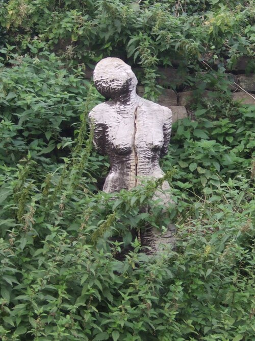
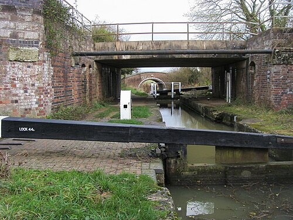
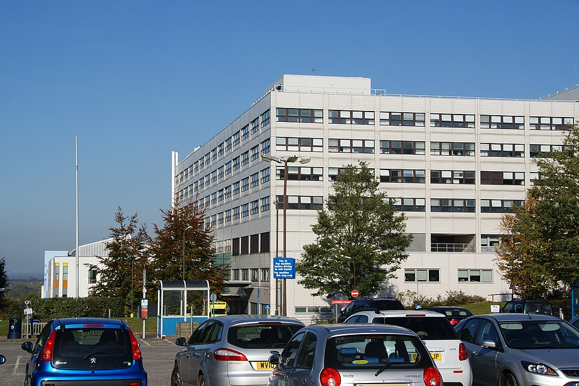
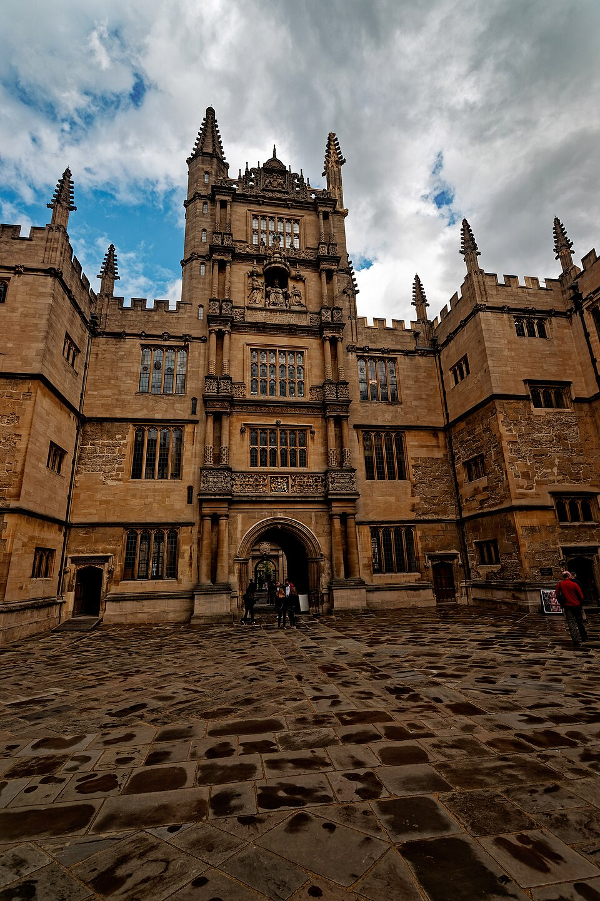
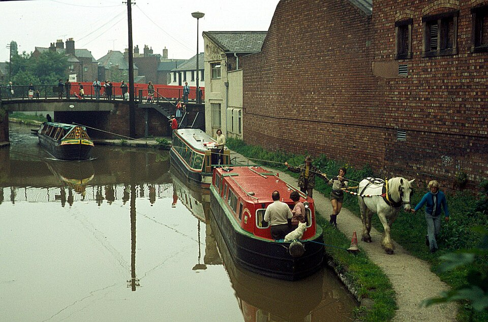
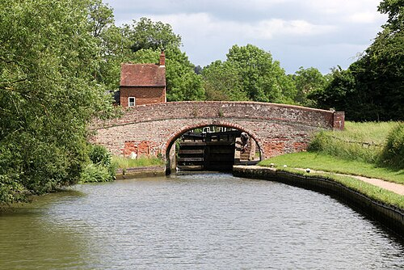

Роман · 1989
Девица мертва
The Wench Is Dead — восьмой роман об инспекторе Морсе. Русское название рабочее.
- Первое издание
- Macmillan, Лондон, 26 октября 1989
- Премия
- «Золотой кинжал» Ассоциации авторов детективов за лучший детектив 1989 года
- Расследуют
- Морс — с больничной койки, Льюис — ногами
- Место
- больница Джона Рэдклиффа в Оксфорде и Оксфордский канал 1859 года
- Экранизация
- «Инспектор Морс», 11 ноября 1998; режиссёр Роберт Найтс, сценарий Малькольма Брэдбери
- Радио
- BBC Radio 4, 1992: Морс — Джон Шрапнел, Льюис — Роберт Гленистер
Название
Название и эпиграф взяты из «Мальтийского еврея» Кристофера Марло. Варавву уличают: «Ты совершил…» — «Блуд; но то было в чужой стране, и к тому же девица мертва». Эту же реплику Т. С. Элиот поставил иронической заставкой к «Портрету дамы».
Завязка
Морс попадает в больницу Джона Рэдклиффа с прободной язвой. Его сосед по палате, полковник Уилфред Денистон, наутро умирает. Льюис приносит две книги: исследование о преступлениях и наказаниях в Шропшире середины XIX века (выбор миссис Льюис) и бульварный роман «Голубой билет» (выбор самого Льюиса). А вдова полковника отдаёт Морсу брошюру мужа «Убийство на Оксфордском канале».
В брошюре — дело 1859 года. Тридцативосьмилетнюю Джоанну Фрэнкс нашли утонувшей в Оксфордском канале у Дьюкс-Кат. Она плыла из Ливерпуля на быстроходной барже «Барбара Брэй» к мужу Чарльзу, конюху, получившему место в Лондоне. Всех четверых с баржи — шкипера Джека «Рори» Олдфилда, Альфреда Массона, Уолтера Таунса и юнгу Томаса Вуттона — обвинили в изнасиловании и убийстве. С юнги обвинения сняли, трёх остальных приговорили к смерти; Таунса помиловали и сослали в Австралию, Олдфилда и Массона публично повесили. Морс, которому велено лежать, не верит ни уликам, ни приговору.
Детектив, раскрывающий старое преступление с больничной койки, — приём из «Дочери времени» Джозефины Тэй (1951), где инспектор Грант расследует судьбу принцев в Тауэре.
Развязка — открыть, если роман прочитан
Морс приходит к выводу, что Джоанна не утонула: она инсценировала смерть ради страховки (её отец был страховым агентом) и подставила чужое тело. Её первый муж, фокусник Ф. Т. Донован, «умерший» в 1858 году, видимо, тоже инсценировал смерть. В Ирландии с помощью инспектора Малвани Морс без разрешения вскрывает могилу Донована: в гробу свёрнутый ковёр и брикеты торфа.
В Дерби, в доме, где выросла Джоанна, перед сносом под слоями обоев находят отметки роста — её и брата. Джоанна была заметно ниже утопленницы из канала. В эпилоге Морс понимает, что исчезнувший свидетель Дональд Фавант — анаграмма имени F. T. Donavan: Донован жил под чужим именем.
Люди
| Имя | Кто это |
|---|---|
| Полковник Денистон | Сосед Морса по палате, автор брошюры; умирает. |
| Кристина Гринуэй | Дочь другого пациента, работает в Бодлианской библиотеке и ищет для Морса материалы. |
| Джоанна Фрэнкс | Жертва 1859 года. |
| Чарльз Фрэнкс | Её муж, конюх. |
| Олдфилд, Массон, Таунс, Вуттон | Команда баржи «Барбара Брэй». |
| Ф. Т. Донован | Первый муж Джоанны, фокусник. |
| Инспектор Малвани | Ирландский полицейский, помогает Морсу. |
Настоящее дело: Кристина Коллинз, 1839
Декстер взял за основу реальное убийство. В 1839 году тридцатисемилетняя Кристина Коллинз плыла к мужу в Лондон по каналу Трент — Мерси и была найдена мёртвой у Ружли в Стаффордшире. Шкипера Джеймса Оуэна и лодочника Джорджа Томаса повесили, лодочника Уильяма Эллиса помиловали и сослали, юнгу Уильяма Мастона не судили. Улики были в основном косвенными: команда была пьяна, свидетели слышали, как Кристину пугали непристойностями, и все четверо лгали на суде. Обвиняемые утверждали, что она сама прыгнула в воду, хотя там было меньше четырёх футов глубины. Знаток стаффордширских убийств Алан Хейхёрст позже написал, что с выводами Декстера он не согласен.
Декстер перенёс дело из Стаффордшира в Оксфорд, с канала Трент — Мерси на Оксфордский канал, и благодарит в посвящении Гарри Джаджа, «любителя каналов», который дал ему брошюру Джона Годвина «Убийство Кристины Коллинз».


Места
| Место | Что там происходит | |
|---|---|---|
| Больница Джона Рэдклиффа | есть | Новая больница в Хедингтоне, где лежит Морс. |
| Дьюкс-Кат | есть | Короткий канал, соединяющий Оксфордский канал с Темзой у Вулверкота. Здесь нашли Джоанну. |
| Бодлианская библиотека | есть | Главная библиотека Оксфорда, где работает Кристина Гринуэй. |
| Центральная библиотека Уэстгейт | есть | Городская библиотека, где она ищет материалы. |
| Участок на Сент-Олдейтс | есть | Здесь Льюис находит туфли Джоанны, хранящиеся с 1859 года. |
| Дерби, Ирландия | есть | Дом детства Джоанны и могила Донована. |





_1613.jpg){kind=link}


Реалии
- Быстроходная баржа (fly boat)
- Грузовое судно, которое шло по каналу днём и ночью со сменой лошадей и экипажа. Брало и пассажиров, которым было не по карману ехать каретой.
- Ссылка в Австралию (transportation)
- До середины XIX века Британия отправляла осуждённых на каторгу в австралийские колонии. Помилование от виселицы часто означало именно ссылку.
- Публичная казнь
- В Англии вешали при публике до 1868 года; казни собирали толпы.
- Прободная язва
- Язва желудка, проевшая его стенку; требует срочной операции. Для Морса, с его виски и пивом, диагноз неслучайный.
- Бодлианская библиотека
- Главная научная библиотека Оксфорда, открытая в 1602 году; по закону получает экземпляр каждой книги, изданной в Британии.
Книга и сериал
Серия вышла 11 ноября 1998 года. Историческая часть почти не изменена, а в современной у Морса другие собеседники: Льюиса нет, вместо него — молодой констебль Эдриан Кершоу (Мэттью Финни), рядом американка доктор ван Бюрен (Лиза Айкхорн) и Адель Сесил из «Смерть теперь моя соседка».
- Сцены на канале снимали на шлюзах Браунстона на канале Гранд-Юнион и на канале Кеннет — Эйвон; конторы и погрузку — в Музее Чёрной страны в Дадли.
- «Барбару Брэй» играла настоящая старая баржа «Австралия» 1894 года постройки; конные баржи две недели буксировали к месту съёмок моторные суда.
- Снимали на широких каналах, хотя Оксфордский канал узкий.
